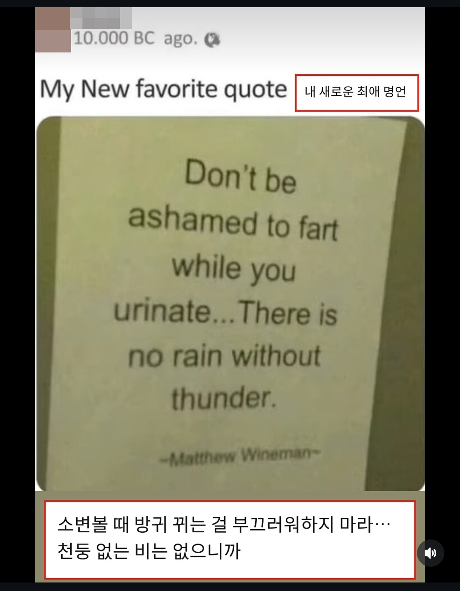

내 새로운 최애 명언.jpg
댓글
천둥인줄 알았는데...
번개가 살짝 샜어요
폭설이었다....
폭풍설사
소변이랑 방귀는 한 세트라고
쉬이이이이잇.....뿡...아자자잣!!!!!
큰 문제를 해결하면 작은 문제는 알아서 해결된다
아자자자자자자자잣!!!!!!!!!❤️
분명 천둥이였는데
눈이 내리게되면?
방귀일거라 확신하지 마라.
분명 천둥이었는데..?
천둥인줄 알았는데 우박이었다면?
우박과 비가 같이 내리네요
오줌가는데 똥은안오지만 똥가는데는 오줌이온다
천둥 없는 번개 아냐?
다른게 나왔더라
나이먹으면 반대도 될수있음
천둥이 아니라 우박이라면
근데 힘주다보면 방귀 나오는건 당연한걸
오줌 쌀 때 힘을 줘? 오히려 힘 푸니까 방귀도 나오는 거 아닌가
마지막에 흡 하고 더 쌀떄 힘주는듯?
번개는 그럼 뭐야
퍼득..
폭우와 천둥만 치는 것이 아니라...
벼락(똥)도 떨어졌다면?
아씨 분명 방귀였는데
너가 30살이 넘었다면 슬슬 너의 항문은 배신의 기회를 노리고 있을 것이다.
오줌싸다 변가칸들어간적이 한두번이 아녀
아 씨발 방구였잖아!!!!!
댓글씹창났네ㄹㅇ 으악
분명 방구였는데
비구름 : 엥 아닌데요